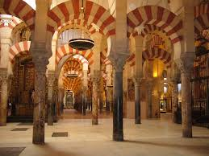
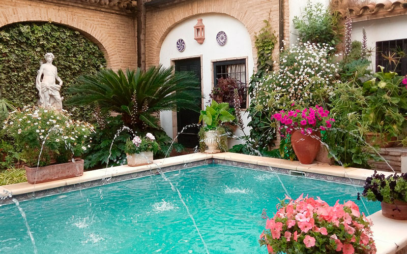

29 de marzo de 2020
Casco Histórico
El centro histórico de Córdoba es uno de los cascos antiguos más grandes de Europa. En 1984, la Unesco declaró a la mezquita-catedral de Córdoba como Patrimonio de la Humanidad. Más tarde, en 1994, la Unesco expandió esta denominación a gran parte del casco antiguo. El centro histórico posee una gran riqueza monumental conservando grandes vestigios de la época romana, árabe y cristiana.
Leer más

29 de marzo de 2020
La Mezquita
Mezquita-catedral de Córdoba, Santa María Madre de Dios» o «Gran Mezquita de Córdoba», actualmente conocida como la Catedral de la Asunción de Nuestra Señora de forma eclesiástica, es un edificio de la ciudad de Córdoba, España. En 2019 superó los dos millones de visitantes, siendo su récord histórico y convirtiéndolo en uno de los monumentos más visitados de España.
Leer más

29 de marzo de 2020
Los Patios
El Festival de los Patios Cordobeses es un concurso de patios de Córdoba (España) celebrado, generalmente, durante la segunda y tercera semana del mes de mayo. Los participantes abren, de modo gratuito, decorativo sus patios para que puedan ser visitados dentro del horario establecido para tal fin. En los últimos años, los patios en concursos se señalan con macetas de setos que se colocan flanqueando las puertas, de modo que puedan ser identificados de manera clara.
Leer más

29 de marzo de 2020
Medina Azahara
Medina Azahara, castellanización del nombre en árabe, مدينة الزهراء Madīnat al-Zahrā ("la ciudad brillante"), fue una ciudad palatina o áulica que mandó edificar el primer califa de Córdoba, Abderramán III, a unos 8 km en las afueras de Córdoba en dirección oeste, a los pies de Sierra Morena.
Leer más